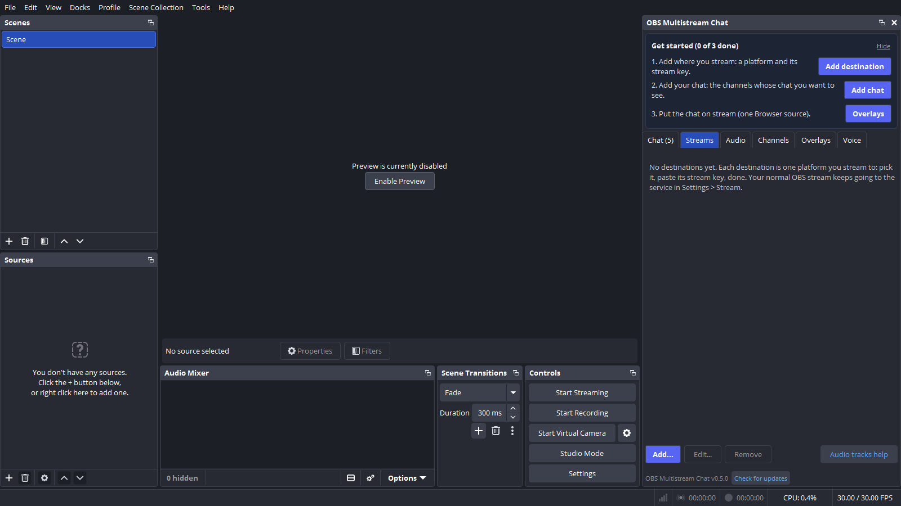
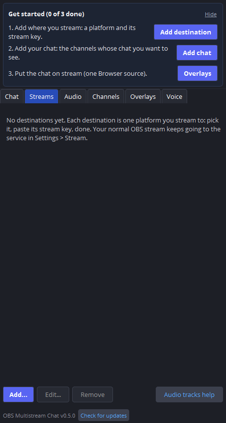
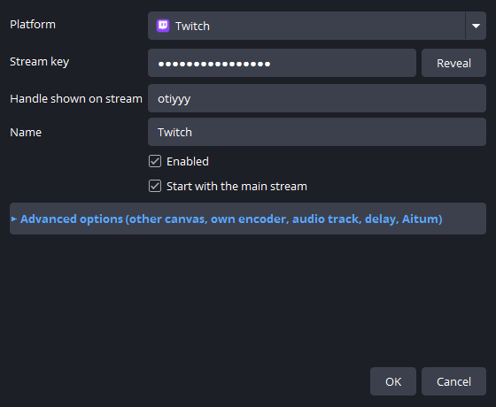
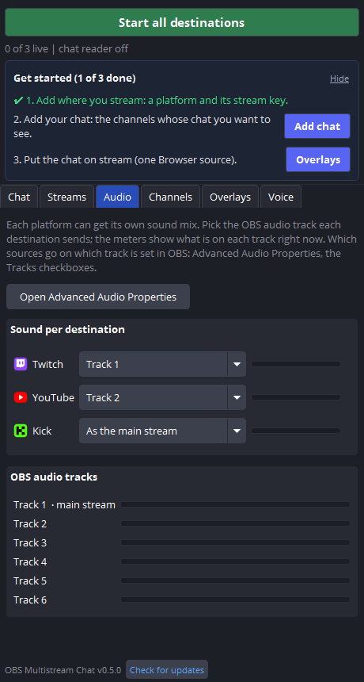
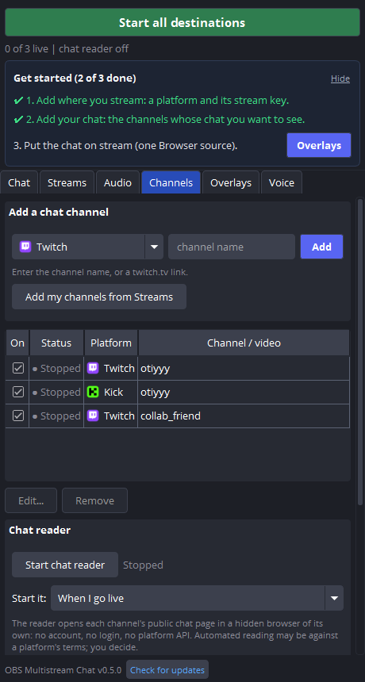
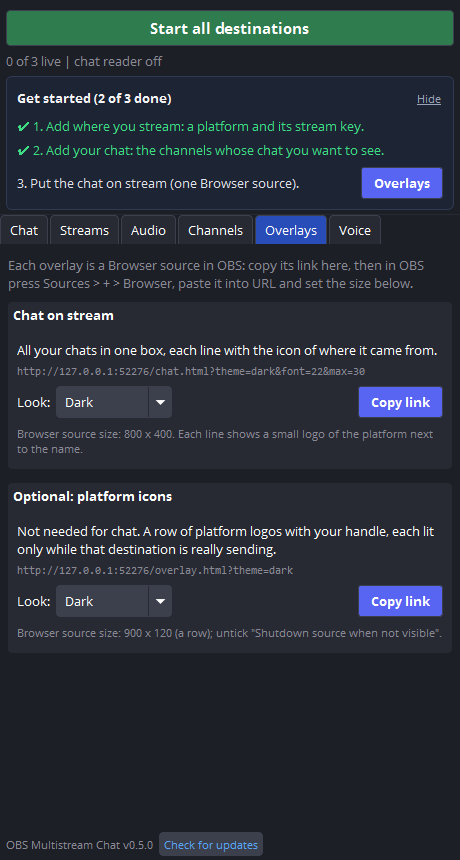
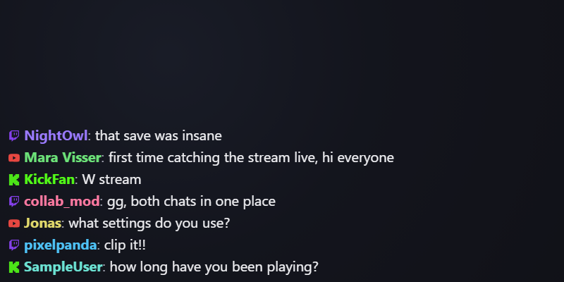
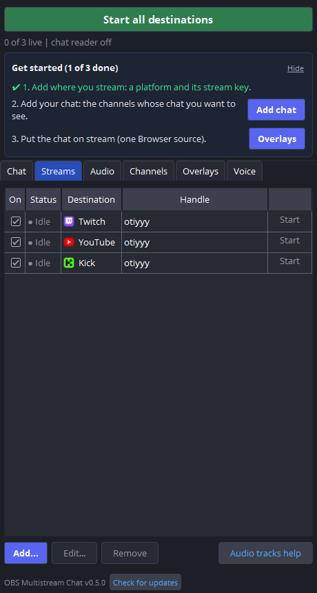
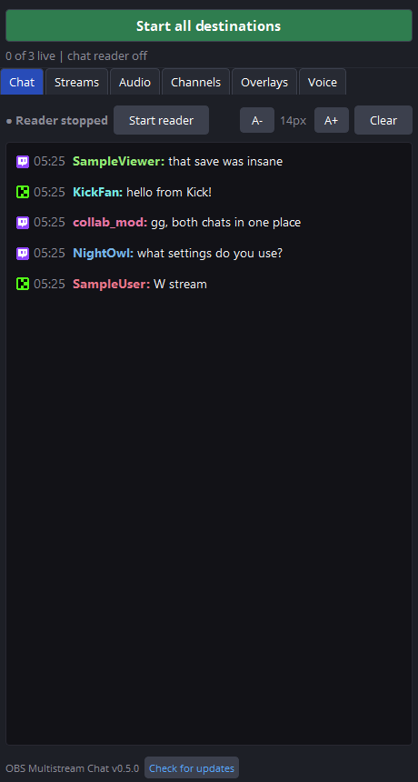
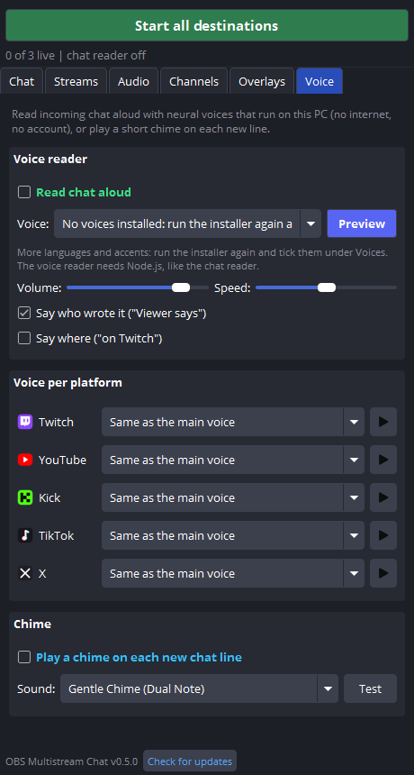

Quick start
From install to live in a few minutes. The pictures are the real panel in OBS, with sample channels and sample chat.
1Open the panel
Start OBS, then Docks > OBS Multistream Chat (or Tools > OBS Multistream Chat) and drag it next to your other docks. Until you are set up it shows a Get started card: each step has a button that takes you to the right place and ticks itself off when done.

2Add where you stream
Press Add destination. Pick the platform, paste its stream key (from the platform's dashboard) and type the handle you want shown. The server address is filled in for you. Your normal OBS stream keeps going to Settings > Stream; add each extra platform here.
Another canvas (vertical TikTok), an own encoder, a delay or Aitum's settings are under Advanced options in the same window.


3Give each platform its sound
On the Audio tab, pick the OBS audio track each destination sends (for example: no music on YouTube). The meters show what is on each track, and a destination whose track has been silent for 5 seconds says so. Which sources go on which track is set in OBS's Advanced Audio Properties (the panel has a button for it).

4Add your chat
Press Add chat (or open Channels). Pick the platform, type the channel and press Add. For YouTube type your channel as
@yourchannel: the live stream is found by itself, every time you go live. Add my channels from Streams adds your own channels in one go
and never changes one you added yourself.

5Put the chat on stream
On Overlays, press Copy link under Chat on stream. In OBS: Sources > + > Browser, paste the link into URL, width 800, height 400. Every line has a small logo of the platform next to the name.


6Go live
Start your normal OBS stream: destinations with Start with the main stream go live with it (or press Start all destinations). The Chat tab shows all chats together for you.


7Optional: read chat aloud
The Voice tab reads chat with voices that run on this PC, with its own voice per platform if you like. Your choices are remembered.

More detail (every option, troubleshooting, antivirus notes) is in README.md in this folder's parent and on
github.com/otissy/obs-multistream-chat.